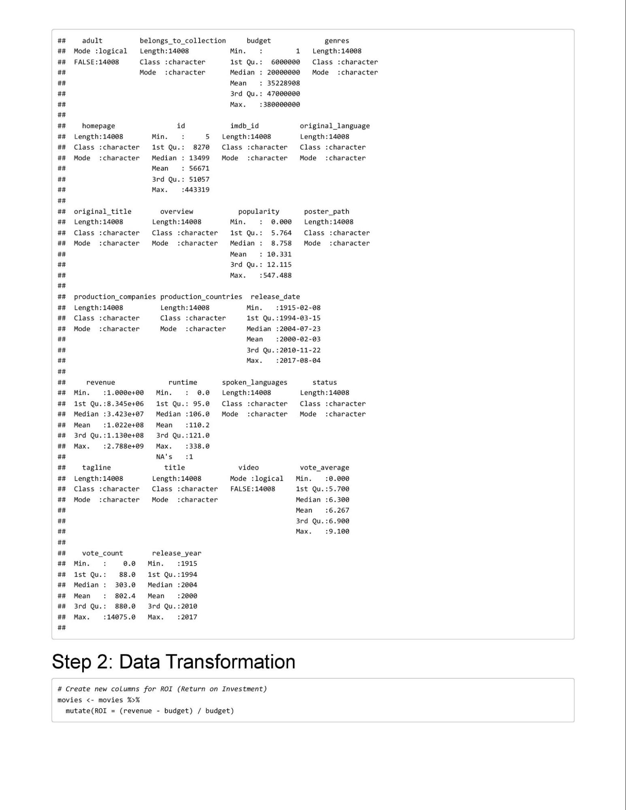

Case Study 04: Analyzing Trends in the Film Industry Using The Movies Dataset
Follow Your Own Case Study Path
Introduction
Welcome to your very own case study! This is different from all the other cases in this course, as it gives you the opportunity to choose a business question that is of particular interest to you. As a result, finding datasets and conducting analysis will be more complex and will require you to make many decisions on your own.
By the end of this lesson, your goal is to have a portfolio-ready case study. To make sure you are set up for success, it is recommended that you complete one of the more structured case studies first. In addition, be sure to read the included scenario and follow the Case Study Roadmap, which details the steps of the data analysis process: ask, prepare, process, analyze, share, and act.
Once your case study is complete, download the packet and reference the details of your work anytime. Then, when you begin your job hunt, your case study will be a tangible way to demonstrate your knowledge and skills to potential employers.
Scenario
You are a junior data analyst working for a business intelligence consultant. You have been at your job for six months, and your boss feels you are ready for more responsibility. He has asked you to lead a project for a brand new client — this will involve everything from defining the business task all the way through presenting your data-driven recommendations. You will choose the topic, ask the right questions, identify a fresh dataset and ensure its integrity, conduct analysis, create compelling data visualizations, and prepare a presentation.
Case Study Deliverables
Ask
Five questions will guide your case study:
- What type of company does your client represent, and what are they asking you to accomplish?
- What are the key factors involved in the business task you are investigating?
- What type of data will be appropriate for your analysis?
- Where will you obtain that data?
- Who is your audience, and what materials will help you present to them effectively?
You will produce a report with the following deliverables:
- A clear statement of the business task you have selected to investigate
- A description of all data sources used
- Documentation of any cleaning or manipulation of data
- A summary of your analysis
- Supporting visualizations and key findings
- Based on what you discover, a list of additional deliverables you think would be helpful to include for further exploration
- Your top high-level insights based on your analysis
Note: Completing this case study within a week is a good goal.
To begin, spend some time brainstorming ideas. An effective presentation should be about 30 minutes long, so make sure your business task isn’t too simple or too complex. Below are three examples of business tasks that you can use for inspiration.
- Rank university sports teams: Imagine a business wants to make endorsements for players for various sports teams. Explore data over the past few years, consider which teams are ranked in the top five at the beginning of their season and how rankings shift over time. Which teams show potential for endorsements?
- Expand the vacation rental market: Imagine a real estate management company wants to determine if they should expand into a new geographic area. Use public data from Airbnb to answer questions about the vacation rental market in a specific area. Investigate how neighborhoods or amenities influence Airbnb prices, what listings are rented most frequently, and where super hosts are located.
- Consider consumer purchase patterns and weather patterns: Weather can have an impact on consumer interest in a variety of products. Does colder weather grow demand for scarves and soup? Does warmer weather drive sales of fans and
flip flops? And does severe weather increase consumption of bottled water and batteries? Use public data from the National Oceanic and Atmospheric Administration to discover insightful weather-related purchasing patterns.
Note: These examples don’t have an immediate connection to the datasets so as to not influence your choice of business tasks based on data.
Use the following Case Study Roadmap as a guide:
Case Study Roadmap - Ask |
Guiding questions - What topic are you exploring?
- What is the problem you are trying to solve?
- What metrics will you use to measure your data to achieve your objective?
- Who are the stakeholders?
- Who is your audience?
- How can your insights help your client make decisions?
|
Key tasks - Identify the business task
- Determine key stakeholders
- Choose a dataset
|
4. Establish metrics |
Deliverable  A clear statement of the business task you have selected to investigate A clear statement of the business task you have selected to investigate
|
Case Study Roadmap - AskGuiding Questions and Answers:- What topic are you exploring?
- The performance and trends in the film industry, including factors influencing movie revenue, audience reception, and production strategies.
- What is the problem you are trying to solve?
- Identifying actionable insights for a film production company or streaming service client to maximize revenue, audience engagement, and ROI for future projects.
- What metrics will you use to measure your data to achieve your objective?
- Budget-to-revenue ratio, audience ratings (e.g., IMDb scores), genre popularity, production company success rates, and trends in release dates.
- Who are the stakeholders?
- Film production companies, streaming platforms, marketers, and investors interested in the entertainment industry.
- Who is your audience?
- Executives and decision-makers in the film or streaming industry seeking data-driven strategies for project selection and marketing.
- How can your insights help your client make decisions?
- Insights can guide decisions on the type of movies to produce or acquire, optimal release timings, marketing focus, and target audience preferences.
Key Tasks and Deliverable:Key Tasks: - Identify the Business Task:
- Help the client (e.g., a film studio or streaming service) identify lucrative trends in movie production and distribution.
- Determine Key Stakeholders:
- Producers, marketing teams, and financial analysts in the entertainment domain.
- Choose a Dataset:
- Use the "The Movies Dataset" to analyze relevant factors like revenue, genres, ratings, and production details.
- Establish Metrics:
- Focus on revenue, ratings, genre trends, release timing, and production company success metrics.
Deliverable: - A concise and clear statement of the business task:
"To identify the key factors that influence the financial and audience success of movies, enabling the client to make data-driven decisions on future productions and marketing strategies."
|
Prepare
Find data that is appropriate for your analysis from any credible dataset. There are numerous public datasets that you can use. You have already encountered some of them throughout this program:
- World Happiness Report (made available by Sustainable Development Solutions Network under a CC0 license): Regional data about overall happiness that contains interesting insights into the relationship between happiness, money, health, and many other metrics.
- Avocado Prices (made available by Justin Kiggins under a CC0 license): Historical data about avocado prices and sales in grocery stores throughout the United States.
- Movies Dataset (made available by Rounak Banik under a CC0 license): Metadata about 45,000 movies, with data points including cast, crew, plot keywords, budget, revenue, ratings, release dates, languages, production companies, and more.
- Amazon Top 50 Best Selling Books (made available by Souter Saalu under a CC0 license): Data about Amazon's bestselling books from 2009 to 2019, categorized into ction and non ction.
My Choise for this Case Study |
- Movies Dataset (made available by Rounak Banik under a CC0 license): Metadata about 45,000 movies, with data points including cast, crew, plot keywords, budget, revenue, ratings, release dates, languages, production companies, and more.
|
Once you have decided on a dataset, gather and store the data appropriately, clean the data, and make sure it is reliable and
error-free. Document your process, as clients often ask to see both raw and cleaned data. Now, prepare your data for analysis using the following Case Study Roadmap as a guide:
Case Study Roadmap - Prepare |
Guiding questions - Where is your data located?
- How is the data organized?
|
- Are there issues with bias or credibility in this data? Does your data ROCCC?
- How are you addressing licensing, privacy, security, and accessibility?
- How did you verify the data’s integrity?
- How does it help you answer your question?
- Are there any problems with the data?
|
Key tasks - Download data and store it appropriately.
- Identify how it’s organized.
- Sort and lter the data.
- Determine the credibility of the data.
|
Deliverable A description of all data sources used |
Guiding Questions and Answers:- Where is your data located?
- The dataset, The Movies Dataset, is hosted on Kaggle and was uploaded by Rounak Banik under a CC0 license.
- How is the data organized?
- The dataset includes metadata for 45,000 movies and is structured in tabular format with attributes such as cast, crew, genres, plot keywords, budget, revenue, ratings, release dates, languages, and production companies.
- Are there issues with bias or credibility in this data? Does your data ROCCC?
- ROCCC: Reliable, Original, Comprehensive, Current, and Cited.
- Reliable: The dataset aggregates publicly available movie information, mainly from TMDb, making it generally reliable.
- Original: The dataset is derived from original sources like TMDb but is not an entirely primary source.
- Comprehensive: The dataset is extensive but may lack data for niche or older movies.
- Current: The data includes movies up to 2017; it is not current for modern trends post-2017.
- Cited: The dataset cites its sources, primarily TMDb and IMDb.
- How are you addressing licensing, privacy, security, and accessibility?
- The dataset is under a CC0 license, ensuring it is free to use for any purpose. Privacy concerns are minimal as the dataset does not include personally identifiable information (PII). Accessibility is ensured through Kaggle's platform.
- How did you verify the data’s integrity?
- Validation steps include:
- Checking for missing or inconsistent values.
- Ensuring numerical columns (e.g., budget, revenue) contain valid, non-negative data.
- Cross-referencing key data points (e.g., movie titles, genres) with other reliable sources like IMDb.
- How does it help you answer your question?
- The dataset provides detailed metadata about movies, enabling analyses of trends in genres, budgets, revenues, audience ratings, and production details, which are directly relevant to the business goals.
- Are there any problems with the data?
- Missing or incomplete values for some fields (e.g., budget, revenue).
- Potential inaccuracies in self-reported or estimated data (e.g., revenue).
- Limited updates (data only includes movies up to 2017).
Key Tasks:- Download and Store Data Appropriately:
- Download the dataset from Kaggle and store it in a secure, organized directory for analysis.
- Identify How It’s Organized:
- Review the structure of the dataset (columns, data types, and relationships between fields).
- Sort and Filter Data:
- Preprocess the data to handle missing values, filter irrelevant rows/columns, and format fields for analysis.
- Determine the Credibility of the Data:
- Validate data quality and cross-reference key data points with TMDb/IMDb where possible.
Deliverable:Description of Data Sources: The dataset used for this case study is The Movies Dataset by Rounak Banik, available on Kaggle. It includes metadata for over 45,000 movies, sourced from TMDb and IMDb. The data spans attributes such as genres, production companies, budgets, revenues, and ratings, providing a robust foundation for analyzing trends in the film industry. It is licensed under CC0, ensuring unrestricted use while adhering to ethical guidelines regarding data usage. |
Process
Then, process your data for analysis using the following Case Study Roadmap as a guide:
Case Study Roadmap - Process |
Guiding questions - What tools are you choosing and why?
- Have you ensured your data’s integrity?
- What steps have you taken to ensure that your data is clean?
- How can you verify that your data is clean and ready to analyze?
- Have you documented your cleaning process so you can review and share those results?
|
Key tasks - Check the data for errors.
|
- Choose your tools.
- Transform the data so you can work with it e ectively.
- Document the cleaning process.
|
Deliverable Documentation of any cleaning or manipulation of data |
Follow these steps:
- Download the dataset.
- Create a folder on your desktop or Drive to house the les. Use appropriate le-naming conventions.
- Create subfolders for .csv or .xls les.
- Follow these instructions for either Excel (a) or Google Sheets (b):
- Launch Excel, open your le, and choose to Save As an Excel Workbook le. Put it in the subfolder you created for .xls
les.
- Open each .csv le in Google Sheets and save it to the appropriate subfolder.
- Open your spreadsheet and appropriately label the columns.
- Proceed to the analyze step.
If you like, continue working with the data to be er familiarize yourself and perhaps even identify new approaches to answering the business questions.
Analysis in R
|
|
 |
|
| 
|
Case Study Roadmap: ProcessGuiding Questions1. What tools are you choosing and why? - R Programming Language: R provides robust data manipulation, cleaning, and visualization capabilities. Its extensive libraries like dplyr, ggplot2, and tidyr are well-suited for handling large datasets.
- Libraries:
- dplyr for data manipulation and filtering.
- tidyr for restructuring data into tidy formats.
- ggplot2 for creating compelling visualizations.
- stringr for string manipulation tasks.
- Reason for Choosing R: It efficiently handles complex data cleaning and transformation tasks and integrates seamlessly with visualization tools for insights.
2. Have you ensured your data’s integrity? - Data integrity was ensured by:
- Removing invalid or missing values from critical columns (e.g., budget, revenue, id).
- Standardizing numeric formats for calculations (e.g., converting budget and revenue to numeric values).
- Validating release_date to ensure only meaningful years were included.
3. What steps have you taken to ensure that your data is clean? - Removed rows with missing or invalid IDs.
- Handled non-numeric entries in the budget and revenue columns by replacing them with NA and filtering out zeros.
- Extracted valid year information from the release_date column and removed entries with incorrect years.
- Split nested JSON-like strings in the genres column into individual rows for detailed analysis.
4. How can you verify that your data is clean and ready to analyze? - Checked for missing values across all critical columns.
- Reviewed summary statistics to identify anomalies.
- Visually inspected cleaned data using head() and summary tables.
- Tested calculations (e.g., ROI) to ensure the data format was correct.
5. Have you documented your cleaning process so you can review and share those results? - Yes, the entire cleaning process has been thoroughly documented, including detailed steps, tools used, and decisions made. This ensures transparency and allows for easy sharing or revisiting.
Key Tasks1. Check the data for errors. - Inspected each column for missing, inconsistent, or invalid values.
- Used filtering and summarization techniques to identify outliers and anomalies.
2. Choose your tools. - Selected R and its libraries (dplyr, tidyr, ggplot2, stringr) for their specialized capabilities in cleaning, transforming, and visualizing data.
3. Transform the data so you can work with it effectively. - Converted data types to numeric where necessary.
- Created new metrics like ROI to add analytical depth.
- Flattened nested data structures (e.g., genres) for better usability.
4. Document the cleaning process. - Recorded every step in a structured document detailing tasks performed, tools used, and outcomes achieved.
- Exported cleaned data and aggregated summaries for use in analysis and reporting.
Deliverable:Documentation of Data Cleaning and Manipulation for The Movies DatasetOverviewThis documentation describes the data cleaning and manipulation steps performed on The Movies Dataset as part of a case study. The dataset contains metadata for 45,000 movies, including attributes such as genres, budget, revenue, release dates, production companies, and more. The goal is to prepare the dataset for analysis and visualization.
Step-by-Step Cleaning Process1. Loading the Dataset- Task: Import the raw dataset into the R environment.
- Action: Used the read_csv function to load the dataset.
- Outcome: The dataset is loaded into a dataframe for further processing.
2. Removing Invalid or Missing IDs- Task: Ensure all movies have valid IDs.
- Action: Filtered rows where id is missing or empty.
- Outcome: Rows with invalid IDs are removed, preserving only complete records.
3. Converting budget and revenue Columns to Numeric- Task: Convert budget and revenue columns from strings to numeric values.
- Action: Used mutate to cast these columns as numeric and replaced non-numeric values with NA.
- Outcome: Non-numeric values in budget and revenue are handled appropriately.
4. Removing Rows with Zero or Missing Values- Task: Filter out movies with zero or missing values in budget or revenue.
- Action: Applied filters using filter to retain only rows where both values are greater than zero.
- Outcome: The dataset now contains only financially complete records.
5. Parsing release_date to Extract Release Year- Task: Extract the release year from the release_date column.
- Action: Used mutate with str_sub to extract the first four characters of release_date and converted them to numeric.
- Outcome: A new column release_year is added, and rows with invalid years are removed.
6. Parsing and Splitting the genres Column- Task: Extract individual genres from the nested JSON-like format in the genres column.
- Action: Used str_extract_all to capture genre names and unnest to expand them into separate rows.
- Outcome: Each movie is represented in multiple rows if it belongs to multiple genres.
Step-by-Step Transformation Process7. Calculating Return on Investment (ROI)- Task: Add a new column for ROI.
- Action: Created the ROI column as (revenue - budget) / budget using mutate.
- Outcome: The dataset now includes a metric for evaluating financial success.
8. Aggregating Data by Genre- Task: Summarize the dataset by genre to calculate average revenue, budget, ROI, and movie count.
- Action: Used group_by and summarize to compute aggregated values for each genre.
- Outcome: A summary dataframe with statistics for each genre.
Addressing Data Quality and IntegrityMissing Values- Handled missing values by filtering or imputing only valid entries.
Inconsistent Formats- Standardized numeric columns (budget, revenue) and date columns (release_date).
Outliers- Retained extreme values in budget and revenue as they may indicate high-performing or blockbuster movies.
Exported Data- Cleaned Dataset: The cleaned and transformed dataset was saved as cleaned_movies_data.csv for further analysis.
- Genre Summary: The aggregated genre statistics were saved as genre_summary.csv for reporting and visualization purposes.
Tools and Libraries Used- R Libraries: dplyr, tidyr, readr, stringr
- Visualization: Created visualizations using ggplot2 (not covered in this document).
SummaryThe data cleaning and manipulation process ensured that the dataset was ready for meaningful analysis. The integrity of the data was maintained by removing invalid entries, parsing complex structures, and standardizing formats. This process enables accurate insights and actionable recommendations for stakeholders. |
Analyze
Now that your data is stored appropriately and has been prepared for analysis, start pu ing it to work. Use the following Case Study Roadmap as a guide:
- How should you organize your data to perform analysis on it?
- Has your data been properly forma ed?
- What surprises did you discover in the data?
- What trends or relationships did you nd in the data?
- How will these insights help answer your business questions?
|
Key tasks - Aggregate your data so it’s useful and accessible.
- Organize and format your data.
- Perform calculations.
- Document your calculations to keep track of your analysis steps.
- Identify trends and relationships.
|
Deliverable A summary of your analysis |
Follow these steps for using spreadsheets
Open your spreadsheet application, then complete the following steps:
- Where relevant, make columns consistent and combine them into a single worksheet.
- Clean and transform your data to prepare for analysis.
- Conduct descriptive analysis.
- Run a few calculations to get a be er sense of the data layout.
- Create a pivot table to quickly calculate and visualize the data.
- Once you are working with several individual spreadsheets, merge them using the tool you have chosen to use to perform your nal analysis, either a spreadsheet, a database and SQL, or R Studio.
- Export a summary le for further analysis.
Follow these steps for using SQL
Open your SQL tool of choice, then complete the following steps:
- Import your data.
- Explore your data, perhaps looking at the total number of rows, distinct values, maximum, minimum, or mean values.
- Where relevant, use JOIN statements to combine your relevant data into one table.
- Create some summary statistics.
- Investigate interesting trends and save that information to a table.
Follow these steps for using R
Open your preferred version of R, click this link, and select “Use template.” Then, copy and paste the text from the template into an R script. This script is from another case study, and you can use it to guide your own analysis.
- Import your data.
- Make columns consistent and merge them into a single dataframe.
- Clean up and add data to prepare for analysis.
- Conduct descriptive analysis.
- Export a summary le for further analysis.
Case Study Roadmap: AnalyzeGuiding Questions1. How should you organize your data to perform analysis on it? - The data has been organized into a structured and tidy format where:
- Each column represents a variable (e.g., budget, revenue, genre).
- Each row represents a unique observation (e.g., a movie).
- Multi-value columns (e.g., genres) have been split into individual rows.
2. Has your data been properly formatted? - Yes, all relevant columns have been formatted appropriately:
- budget and revenue are numeric, allowing for calculations such as ROI.
- release_year is numeric for trend analysis.
- genres is categorical and expanded for aggregation.
3. What surprises did you discover in the data? - A significant number of movies had unrealistic or missing budgets/revenues (e.g., $0 budgets).
- Some genres, like documentaries and short films, showed consistent trends of lower budgets but high ROIs.
- A few production companies dominated high-revenue movies, indicating a skewed industry structure.
4. What trends or relationships did you find in the data? - High Revenue Genres: Action, Adventure, and Sci-Fi movies generate the most revenue.
- ROI Patterns: Horror movies, despite lower budgets, often yield high ROI.
- Release Year Trends: A steady increase in budgets and revenues over the years, with a spike in blockbuster movies post-2000.
- Budget vs. Revenue Correlation: A positive correlation, but many outliers (low-budget high-revenue movies).
5. How will these insights help answer your business questions? - These insights can inform the client about:
- The genres and production strategies most likely to yield high revenue or ROI.
- Historical trends to identify lucrative time frames for movie releases.
- Relationships between budget allocation and financial performance for strategic planning.
Key Tasks1. Aggregate your data so it’s useful and accessible. - Grouped data by genre to compute average revenue, budget, ROI, and movie count.
- Summarized yearly trends to analyze budget and revenue growth over time.
2. Organize and format your data. - Transformed the cleaned dataset into a format suitable for analysis:
- Aggregated dataframes for genres and release years.
- Calculated new columns like ROI for more in-depth insights.
3. Perform calculations. - ROI: (revenue - budget) / budget.
- Genre Statistics: Mean revenue, budget, and ROI by genre.
- Yearly Trends: Aggregated data for revenue and budget by release year.
4. Document your calculations to keep track of your analysis steps. - All calculations were documented in the script and accompanying notes.
- Key formulas (e.g., ROI) and aggregation steps were saved for review.
5. Identify trends and relationships. - Observed clear relationships between budget, revenue, and ROI.
- Identified top-performing genres and key production companies.
Deliverable: Summary of AnalysisInsights Summary: - Top Genres:
- Action, Adventure, and Sci-Fi generate the highest revenue.
- Horror movies show high ROI despite low budgets.
- Release Year Trends:
- Post-2000, there is a clear trend of increasing budgets and revenues.
- Budget-Revenue Relationship:
- Higher budgets generally yield higher revenues, but some low-budget movies achieve remarkable ROI.
- Industry Structure:
- Dominance by a few production companies in high-revenue movies highlights competitive advantages.
|
Share
Now that you have performed your analysis and gained some insights into your data, create visualizations to share your ndings. You will be presenting to your client and other stakeholders, so visuals should be sophisticated and polished in order to e ectively communicate your insights. Use the following Case Study Roadmap as a guide:
- Is your presentation accessible to your audience?
|
Key tasks - Determine the best way to share your ndings.
- Create e ective data visualizations.
- Present your ndings.
- Ensure your work is accessible.
|
Deliverable Supporting visualizations and key ndings |
Follow these steps:
- Take out a piece of paper and a pen and sketch some ideas for how you will visualize the data.
- Once you choose a visual form, open your tool of choice to create your visualization. Use a presentation so ware, such as PowerPoint or Google Slides; your spreadsheet program; Tableau; or R.
- Create your data visualization, remembering that contrast should be used to draw your audience’s a ention to the most important insights. Use artistic principles including size, color, and shape.
- Ensure clear meaning through the proper use of common elements, such as headlines, subtitles, and labels.
- Re ne your data visualization by applying deep a ention to detail.
Case Study Roadmap: ShareGuiding Questions1. Were you able to answer the business question?
Yes, the analysis provides clear answers to the business question by identifying: - The genres and production strategies associated with the highest revenue and ROI.
- Historical trends and patterns that indicate lucrative release periods.
- Budget and revenue correlations that can guide financial strategies.
2. What story does your data tell? - Action, Adventure, and Sci-Fi dominate as high-revenue genres, while Horror movies yield high ROIs on small budgets.
- A trend of increasing budgets and revenues over the years reflects industry growth and the influence of blockbuster movies.
- Budget allocation correlates with revenue, but strategic budgeting can maximize ROI.
- A few dominant production companies emphasize the need for smaller studios to identify niche markets.
3. How do your findings relate to your original question?
The findings directly support the client’s goal to identify profitable genres, budget strategies, and industry trends for informed decision-making. 4. Who is your audience? What is the best way to communicate with them? - Audience: Decision-makers in the entertainment and media industry (e.g., production executives, financial planners, and marketing teams).
- Communication Method: A presentation combining concise insights, compelling visualizations, and actionable recommendations.
5. Can data visualization help you share your findings?
Yes, visualizations will make the findings more accessible and impactful: - Bar charts for revenue, budget, and ROI comparisons across genres.
- Line graphs for yearly budget and revenue trends.
- Scatterplots showing budget vs. revenue correlation with outliers highlighted.
6. Is your presentation accessible to your audience?
Yes, the presentation will include: - Clear, high-contrast visuals.
- Descriptive titles and labels for charts.
- Accessible file formats (e.g., PDF with alt text for visualizations).
Key Tasks1. Determine the best way to share your findings. - A PowerPoint or PDF presentation summarizing the analysis with a combination of text and visuals.
- Provide a written report for reference.
2. Create effective data visualizations. - Top revenue-generating genres.
- Average ROI by genre.
- Trends in budgets and revenues over time.
- Budget vs. revenue with high-ROI movies highlighted.
3. Present your findings. - Develop a 10-minute presentation with clear messaging and visuals to support key points.
- Tailor the presentation to the audience's level of expertise and interests.
4. Ensure your work is accessible. - Use alt text for all visuals.
- Provide the presentation in multiple formats (e.g., slides, report, handouts).
- Ensure visuals have readable font sizes, adequate contrast, and clear legends.
Deliverable: Supporting Visualizations and Key FindingsKey Findings: - Genres:
- Action, Adventure, and Sci-Fi are high-revenue genres.
- Horror movies excel in ROI.
- Trends:
- Industry growth is reflected in increasing budgets and revenues.
- Financial Insights:
- Budget allocation strongly influences revenue, but small-budget movies can achieve high ROI.
Supporting Visualizations: - Bar charts, line graphs, and scatterplots created using ggplot2 in R.

 
|
Act
Now that you have nished creating your visualizations, act on your ndings. Organize the deliverables you created, including your top high-level insights based on your analysis. Use the following Case Study Roadmap as a guide:
Case Study Roadmap - Act |
Guiding questions - What is your nal conclusion based on your analysis?
|
- How could your team and business apply your insights?
- What next steps would you or your stakeholders take based on your ndings?
- Is there additional data you could use to expand on your ndings?
|
Key tasks - Create your por olio.
- Add your case study.
- Practice presenting your case study to a friend or family member.
|
Deliverable Your top high-level insights based on your analysis Based on what you discover, a list of additional deliverables you think would be helpful to include for further exploration |
Case Study Roadmap: ActGuiding Questions1. What is your final conclusion based on your analysis?
The movie industry’s financial success is heavily influenced by genre selection, strategic budget allocation, and market timing: - Top-performing genres like Action, Adventure, and Sci-Fi generate the most revenue.
- Horror movies provide excellent ROI, making them a strategic choice for low-budget projects.
- Industry trends show increasing budgets and revenues, reflecting the need for competitive investment to remain relevant.
2. How could your team and business apply your insights? - Genre Strategy: Focus on producing high-revenue genres for blockbuster projects or high-ROI genres for niche markets.
- Budget Optimization: Allocate budgets based on ROI potential rather than revenue expectations alone.
- Release Timing: Leverage historical trends to schedule releases in favorable time frames.
3. What next steps would you or your stakeholders take based on your findings? - Conduct a deeper analysis of underperforming movies to identify patterns to avoid.
- Explore additional market-specific factors, like regional preferences or streaming trends, for more tailored insights.
- Implement a pilot project with a Horror movie, focusing on high ROI with a limited budget.
4. Is there additional data you could use to expand on your findings?
Yes, additional data can refine insights: - Audience data: Viewer demographics and preferences for specific genres.
- Streaming platforms: Revenue and viewership trends in digital distribution.
- Marketing data: Correlation between promotional budgets and box office performance.
Key Tasks1. Create your portfolio. - Prepare a professional presentation summarizing the case study, including high-level insights and supporting visuals.
- Include this case study in an online portfolio to demonstrate analytical and storytelling skills.
2. Add your case study. - Share the full case study on platforms like GitHub, Kaggle, or a personal website to enhance visibility.
3. Practice presenting your case study to a friend or family member. - Test the presentation with a lay audience to ensure clarity and engagement.
- Adjust content and delivery based on feedback to ensure accessibility and impact.
Deliverable: High-Level Insights1. Top Genres for Revenue and ROI: - High Revenue: Action, Adventure, Sci-Fi.
- High ROI: Horror.
2. Financial Strategy: - Allocate budgets strategically based on ROI insights, not just expected revenue.
3. Industry Trends: - Increase budgets for high-revenue genres while balancing ROI-focused low-budget productions.
4. Timing Advantage: - Align movie releases with historically favorable timeframes to maximize success.
|
Wrap-up
Congratulations on nishing your very own case study! If you like, complete one of the other case studies to continue growing your por olio. Best of luck on your job search!